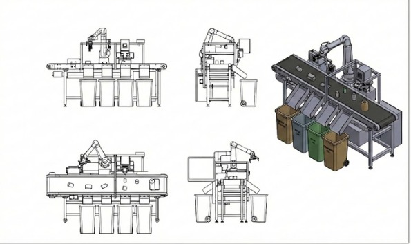

Sistema automatizado de clasificación y valorización de residuos.
Como parte del progrma de Incubación de Proyectos de TECNIA (Univeridad Anahuac), diseñamos y desarrollamos de una máquina inteligente para la clasificación automatizada de residuos sólidos, integrando tecnologías de visión artificial, sensórica industrial y control embebido. Además de identificar y separar materiales (plástico, metal, cartón y orgánico), el sistema incorpora un módulo de transformación que convierte los residuos clasificados en materia prima reutilizable, lista para su reintegración en procesos productivos.

Se busca no solo optimizar la separación de residuos, sino también generar valor económico a partir de ellos, reduciendo costos de disposición final y creando un modelo de aprovechamiento industrial sostenible.
El proyecto trasciende la automatización convencional y se posiciona como una solución integral de transformación industrial sostenible.
No solo optimiza procesos, sino que convierte un pasivo ambiental en un activo productivo, alineado con estándares de industria 4.0, ESG y economía circular.
Sistema de visión artificial para identificación de materiales en tiempo real.
Sensores inductivos, capacitivos y ópticos para validación, junto con un controlador embebido de arquitectura modular escalable.
Actuadores electromecánicos de direccionamiento automático para la correcta separación física.
Interfaz para monitoreo de métricas operativas y sistema de registro de datos para trazabilidad y análisis de eficiencia.
Una vez clasificados, los residuos pasan a un sistema de acondicionamiento donde son procesados para convertirse en materia prima secundaria[cite: 16, 17]. Esto permite cerrar el ciclo productivo bajo un esquema de economía circular[cite: 20]:
Eficiencia de clasificación
Monetización de residuos
Reducción de costos de disposición final